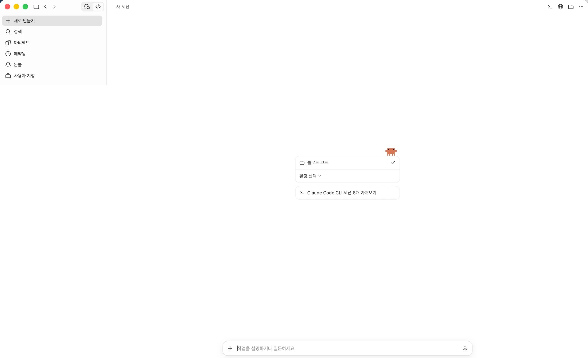
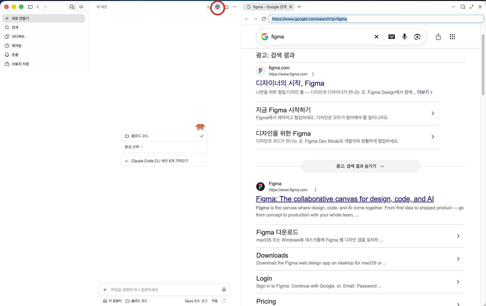
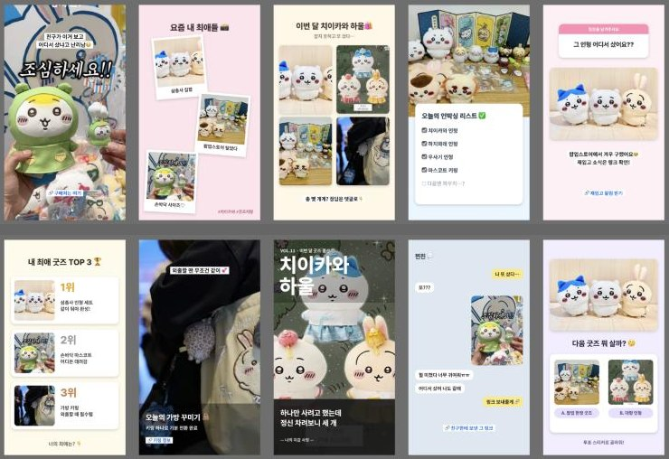
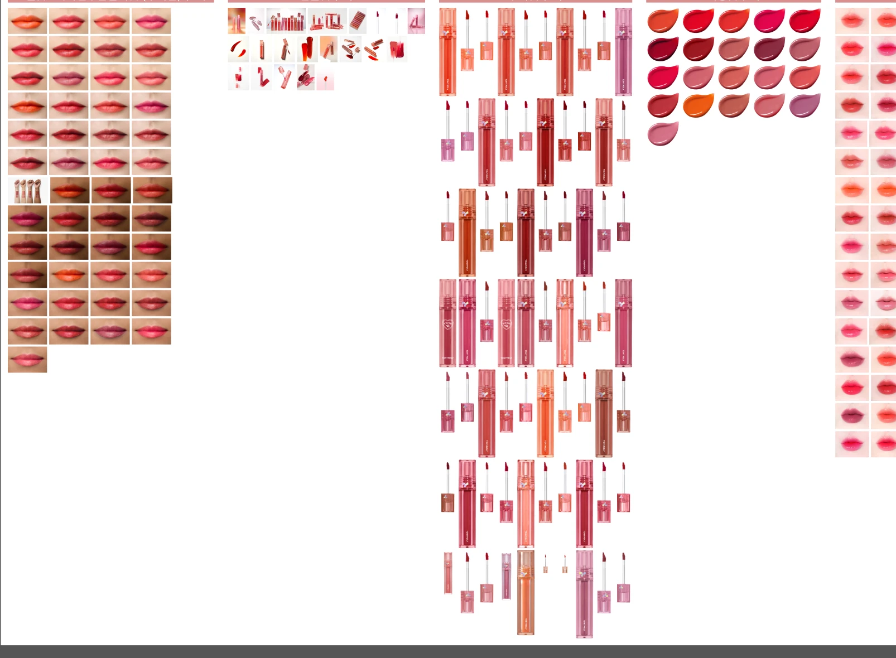

STEP 1
새 세션 열기
- 앱 왼쪽 위의 </> 버튼을 눌러 Code 탭으로 갑니다.
- 왼쪽 메뉴 맨 위 새로 만들기를 누릅니다.
- 가운데 상자에서 작업 폴더를 고릅니다. 결과물은 피그마에 저장되니 폴더는 아무거나 괜찮아요.

클로드 앱 안의 브라우저로 피그마를 열어두면, 말로 요청한 디자인을 클로드가 피그마 파일 안에 직접 만들어 줍니다. 아래는 치이카와 굿즈 자랑 바이럴 소재 1장을 만들고 10가지 형태로 늘린 실제 과정을 처음 하는 사람 기준으로 정리한 것입니다.
맥 또는 윈도우용 Claude 앱에서 Code 탭(</>)이 보여야 합니다. 웹 claude.ai에는 내장 브라우저가 없어요.
내가 수정할 수 있는 파일이어야 합니다. 다른 사람 파일에서 "보기 전용"이면 클로드도 아무것도 못 바꿔요. 무료 계정도 됩니다.
직접 찍었거나 사용 허락을 받은 사진. 클로드는 인터넷에서 캐릭터나 제품 이미지를 가져오지 않습니다.
평소 쓰는 바이럴 소재 프레임이 있으면 클로드가 사이즈, 캡션 스타일, 레이어 이름까지 그대로 따라 합니다.

브라우저 칸이 좁으면 채팅과 브라우저 사이 경계를 끌어서 넓힐 수 있어요.

템플릿이 없어도 됩니다. 그럴 땐 요청에 사이즈(예: 1080×1920)를 꼭 적어 주세요.
아래 문장의 파란 칸만 바꿔서 채팅창에 보내면 됩니다. 무엇을, 어떤 목적으로, 몇 장, 어떤 사이즈, 어떤 언어로 만들지 넣을수록 결과가 원하는 쪽에 가까워져요.
내장 브라우저에 피그마 열어뒀어. [섹션 이름] 섹션에 [주제/제품] [목적: 굿즈 자랑, 신제품 소개 등] 바이럴 소재를 [사이즈]로 [개수]개, 한국어로 만들어줘
내장 브라우저에 피그마 열어뒀어. 치이카와 굿즈 자랑하는 바이럴 소재로 한국어로 만들어줘
보내고 나면 클로드는 이렇게 움직입니다.
허용 버튼이 뜨면 눌러 주세요. 클로드가 피그마 사이트를 처음 다루거나 새로운 작업을 할 때 앱이 허락을 물어봅니다. 누르지 않으면 클로드가 거기서 멈춰 있어요. 작업하는 동안에는 브라우저 화면을 클릭하지 말고 끝날 때까지 기다리는 게 안전합니다.
[섹션 링크] 이미지 넣어놨어. 어울리는 자리에 넣어줘
클로드가 사진을 하나씩 보고 가로 사진은 메인 칸에, 세로나 클로즈업 사진은 원형 칸에, 남는 사진은 흐린 배경에 넣습니다. 특정 사진을 특정 자리에 넣고 싶으면 "image 3을 메인에 넣어줘"처럼 레이어 이름으로 짚어 주세요.
저작권 확인은 사람이 해야 합니다. 공식 이미지나 남이 찍은 사진은 허락 없이 광고 소재에 쓰면 안 돼요. 워터마크가 있는 사진은 게시 전에 꼭 확인하세요.
1장이 마음에 들면 한 줄로 변형을 늘릴 수 있습니다. 이번에는 풀블리드, 폴라로이드, 그리드, 체크리스트, Q&A, TOP 3, 데일리룩, 매거진, 채팅, 투표 10가지가 나왔어요.
이거 그러면 각각 다른 형태로 10개 만들어줘
원하는 형태가 있으면 같이 적어 주세요. 예: "채팅 형식이랑 투표 형식은 꼭 넣어줘"

색조 브랜드처럼 에셋이 너무 많아 일일이 찾기 어려울 때, 번호만 말하면 그 에셋으로 만들어 줘요.
23번 에셋으로 만들어줘
준비물: 피그마에서 에셋 레이어 이름에 호수 번호나 제품 이름이 들어가 있어야 해요. 예: 23_제품컷, 23_발색, 23_스와치. 이름이 "Rectangle 12"처럼 되어 있으면 클로드가 어떤 게 23번인지 알 수 없어요.

손으로 하면 오래 걸리는 반복 작업도 같은 방식으로 맡길 수 있습니다. 색조 브랜드처럼 호수가 수십 개라 디자이너가 제품을 다 외우기 어려울 때 특히 쓸모가 있어요.
여러 프레임에 같은 문구가 있을 때 하나씩 열 필요 없이 한 줄로 바꿉니다. 이번 작업에서 일본어 템플릿 문구를 한국어로 바꾼 것도 같은 방식이에요.
치이카와 섹션 소재 전부에서 "🔗"로 시작하는 문구를 "🔗 구매하러 가기"로 바꿔줘
이 섹션 일본어 캡션을 전부 한국어로 자연스럽게 바꾸고, 폰트는 Noto Sans KR Bold로 맞춰줘
제품컷, 입술 발색컷, 컬러 스와치를 한 에셋 섹션에 모아 두면, 기획안에 적힌 호수에 맞는 것만 골라 소재 프레임에 넣어 줍니다. 사진 칸에 맞게 크기를 맞추고 원본 에셋은 그대로 둬요.
에셋 섹션에서 23번 제품컷이랑 23번 발색컷 가져와서 02번 소재 메인 사진 자리에 넣어줘
(기획안 표 붙여넣기) 이 기획안대로 소재마다 해당 호수 제품컷, 발색컷, 스와치 넣어줘
기획안은 표를 채팅에 그대로 붙여 넣거나, 구글 시트 링크를 주면 됩니다. "소재 번호 / 호수 / 메인 문구"처럼 열이 나뉘어 있으면 가장 정확해요.
디자인 단에서 "어떤 게 23번이더라?" 싶은 경우 클로드에게 물어보면 에셋 섹션을 훑어서 찾아 줍니다.
에셋 섹션에 있는 호수 목록을 제품컷, 발색컷, 스와치가 다 있는지 표로 정리해줘
로지 계열 호수만 6개 골라서 스와치 나란히 놓은 비교 프레임 만들어줘
색 계열로 고르는 건 사진을 보고 판단하는 거라 대략적이에요. 최종 호수는 사람이 확인해 주세요.
제품컷이 수십 장이면 사진만 보고 23번을 정확히 구분하기 어렵습니다. 클로드는 레이어 이름으로 에셋을 찾기 때문에, 에셋 이름에 호수와 종류가 들어 있어야 정확하게 가져옵니다.
| 에셋 종류 | 이름 예시 | 지금처럼 이름이 없으면 |
|---|---|---|
| 제품컷 | 23_제품컷 | 비슷한 튜브가 많아 잘못 고를 수 있음 |
| 입술 발색 | 23_발색_밝은피부 · 23_발색_어두운피부 | 색이 비슷한 호수끼리 헷갈림 |
| 스와치 | 23_스와치 | 색 계열로는 찾아도 번호는 모름 |
| 연출컷 | 23_연출_01 | 어느 호수 연출인지 알 수 없음 |
이름 붙이기도 맡길 수 있어요. 에셋이 호수 순서대로 줄지어 놓여 있다면 "왼쪽 위부터 1번, 오른쪽으로 2, 3… 순서로 이름 붙여줘"라고 하면 한 번에 바꿉니다. 순서가 섞여 있으면 한 번만 사람이 정리해 두면 이후로는 계속 번호로 부를 수 있어요.
에셋은 같은 피그마 파일 안에 있어야 합니다. 클로드는 내장 브라우저에 열린 파일 안에서만 작업해요. 에셋이 다른 파일에 있으면 에셋 섹션을 복사해서 작업 파일에 붙여 넣어 주세요.